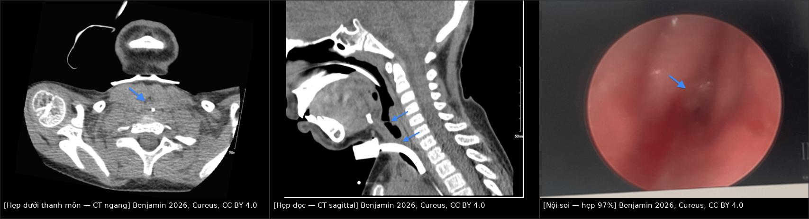
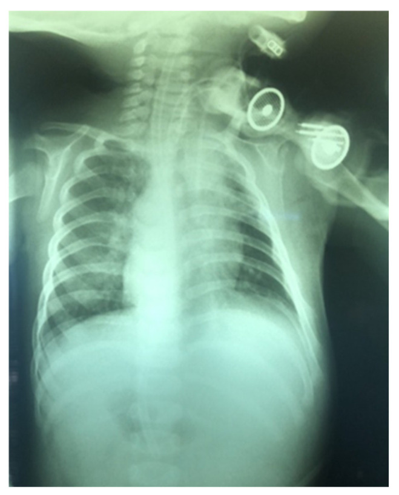
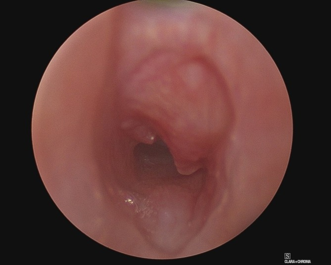
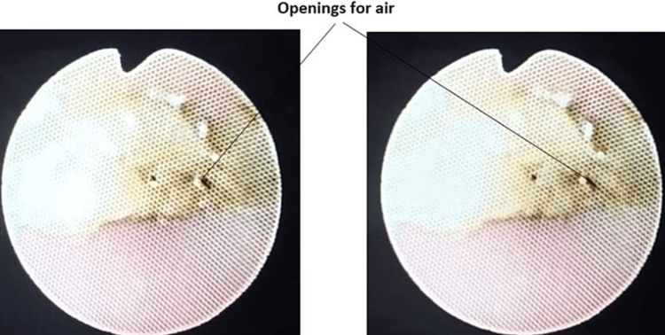
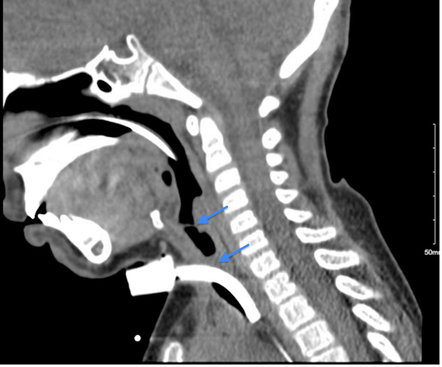

6100 — Chăm sóc, biến chứng & cai ống mở khí quản ở trẻ / Pediatric tracheostomy: complications, surveillance imaging and decannulation
Tags: pattern:hep-duong-tho pattern:u-hat vung:duong-tho-nhi vung:co protocol:CT-co-nguc protocol:X-quang-nguc
Mức chắc chắn (certainty): tổng hợp y văn (literature synthesis) — ghép số liệu từ các đoàn hệ mở: 175 trẻ theo dõi nội soi sau mở khí quản (Suresh R và cs., Laryngoscope Investig Otolaryngol 2024, PMC10866584); 126 trẻ về u hạt và biến chứng sớm (Reddy PD và cs., Am J Otolaryngol 2024); 68 trẻ < 2 tuổi về cỡ ống và khoảng cách tới carina (Eljamri S và cs., Otolaryngol Head Neck Surg 2025, PMC12461770); tổng quan hệ thống 24 giao thức cai ống/1.395 trẻ (Verma R và cs., Pediatr Pulmonol 2021); cùng ca nguyên văn bỏng đường thở có ảnh CT/nội soi (Benjamin P và cs., Cureus 2026, PMC13484941) và ca tắc ống do vảy tiết (Akhtar AB và cs., Cureus 2022, PMC9375839). Bổ sung 2026-11-02 (mục 4–5): 255 trẻ về sụp trên lỗ mở (PMC12369399, CC BY-NC-ND), tổng quan kỹ thuật mở khí quản ở trẻ có X-quang sau đặt ống và công thức cỡ ống (PMC12109619, CC BY 4.0), cập nhật cai ống/đổi ống (PMC8047564), khảo sát 138 bác sĩ về lần thay ống đầu và biến chứng (PMC13015836), tổng quan hệ thống 49 nghiên cứu về biến chứng/tử vong (PMC9615521, CC BY 4.0) và đoàn hệ về thời điểm đổi ống (PMC11226274, CC BY 4.0). Không gắn một bệnh án đơn lẻ cho phần số liệu.
1. Tổng quan bệnh học – cơ chế hình ảnh: vì sao "ống nhỏ đi 0,5 mm" đổi hẳn sinh lý
- Vật lý dòng khí — định luật Poiseuille: sức cản đường thở R ∝ 1/r⁴. Giảm đường kính trong (internal diameter, ID) từ 4,0 xuống 3,5 mm là giảm bán kính 12,5%, nhưng tăng sức cản ~67% ((1/0,875)⁴ = 1,67). Vì thế mỗi lần hạ cỡ ống 0,5 mm khi cai ống là một "test gắng sức" thật sự, không phải thủ tục hành chính — và một nửa milimet u hạt ở trẻ sơ sinh (khí quản ~3,5–4 mm) tương đương hẹp 25–30% tiết diện ở người lớn.
- Vì sao u hạt (granulation tissue) mọc: ống là vật lạ cọ xát niêm mạc + ứ đọng chất tiết quanh lỗ mở + nhiễm khuẩn màng sinh học (biofilm) → viêm mạn → mô hạt. Trong 126 trẻ, u hạt gặp 81,0%, chủ yếu quanh lỗ mở 69,8% và trên lỗ mở (suprastomal) 34,9%; hạch/u hạt trên lỗ mở là thứ chắn ngay trên đầu ống nên cản cai ống dù phổi bình thường. Ciprofloxacin/dexamethasone khí dung làm giảm số đợt u hạt sau khi bắt đầu (z = 3,88; p < 0,001) nhưng không làm nhóm dùng thuốc có ít u hạt hơn (92,4% vs 61,7%) — vì thuốc được kê chính vì đã có u hạt (confounding by indication).
- Vì sao sụp thành trước trên lỗ mở (suprastomal collapse) và biến dạng chữ A (A-frame deformity): ống tì vào sụn khí quản phía trước và vòng sụn bị thiếu máu – tiêu sụn; khi rút ống, đoạn trên lỗ mở mất giá đỡ → lồi vào lòng khi thở ra. Trong 175 trẻ: sụp trên lỗ mở 55% (trung bình sau 17,7 tháng, ước tính 73,7% ở 5 năm), biến dạng chữ A 18% (ước tính 32,8% ở 5 năm); 56% (18/32) biến dạng chữ A xuất hiện sau khi đã cai ống, ước tính 36,1% trong 3 năm sau cai. Mở khí quản càng sớm (tuổi nhỏ) càng dễ sụp: mỗi năm tuổi lớn hơn, nguy cơ sụp giảm (OR 0,92; 95% CI 0,86–0,99).
- Vì sao tắc ống là nguyên nhân tử vong hàng đầu: lòng ống hẹp sẵn (trẻ 8 tuổi dùng ống 6,0 mm không bóng), chất tiết khô tạo vảy tiết (crust) bít gần kín; trẻ không ho được qua ống và không nói được nên dấu hiệu báo trước rất nghèo nàn — ca của Akhtar cho thấy không thể thông khí sau khởi mê dù trước đó không có dấu hiệu báo động. Vì vậy hình ảnh không bao giờ được thay cho việc soi/kiểm tra ống cấp cứu, nhưng X-quang/CT lại là cách duy nhất nhìn vị trí và đường kính ống trong lòng khí quản.
- Vì sao CT là modality chốt cho hẹp khí quản: khí quản trẻ mềm, di động, nên hẹp động (malacia) chỉ thấy khi chụp thì thở ra/hít vào hoặc CT động; còn hẹp cố định do xơ/sụn thấy rõ trên CT ngang/dọc/coronal với lòng khí quản < 50% diện tích dự kiến theo tuổi. Ca bỏng đường thở: nội soi hẹp dưới thanh môn 97%, dính dây thanh 99%, và u hạt bít hoàn toàn dưới thanh môn; CT ngang/dọc xác nhận hẹp ở dưới thanh môn và đoạn khí quản gần — tức tổn thương hai tầng, đúng như hình ghép dưới đây.

2. Mẫu hình + chẩn đoán phân biệt theo vị trí (Gamut)
- Mẫu hình "trẻ có ống mở khí quản đột nhiên xấu": tắc ống (vảy tiết/nút nhầy) → không thông khí được, bóng không lên, SpO₂ tụt nhanh; rơi ống (accidental decannulation) 13,6%; chảy máu lỗ mở 7,2%; hoặc sụp trên lỗ mở khi vừa bịt (cap) ống.
- Gamut theo tầng tổn thương (đọc CT/nội soi từ trên xuống):
- Thanh môn – dưới thanh môn: dính dây thanh, hẹp dưới thanh môn (Myer–Cotton I–IV), u hạt dưới thanh môn.
- Ngay trên lỗ mở (suprastomal): sụp thành trước, u hạt "nắp", biến dạng chữ A.
- Tại lỗ mở (stomal): u hạt quanh lỗ, hẹp vòng sụn, rò khí–da (tracheocutaneous fistula).
- Dưới lỗ mở (infrastomal): u hạt do đầu ống tì, hẹp do bóng/ống quá cỡ.
- Xa (distal): ống quá sâu → đầu ống vào phế quản gốc phải, tắc nút nhầy, xẹp phổi một bên.
- Gamut theo hình thái trên CT: hẹp chu vi (xơ/sụn) vs hẹp do thành trước lồi (A-frame/suprastomal collapse) vs lòng bị lấp bởi khối mô mềm trong lòng (u hạt/nút nhầy) vs hẹp động thì thở ra (malacia, xem bài 602).
- Ba câu hỏi phải trả lời trên mọi phim kiểm tra: (1) đầu ống ở đâu so với carina; (2) đường kính ống có vừa khí quản không (ống quá lớn → thiếu máu niêm mạc, quá nhỏ → tăng sức cản); (3) có tổn thương thành khí quản (u hạt, sụp, hẹp) — phần quyết định cai ống được hay không.
3. Bảng so sánh phân biệt (ma trận đối chiếu)
| Thực thể (entity) | Hình ảnh điển hình (X-quang/CT/nội soi) | Chốt vào (rule-in) | Chốt loại (rule-out) | Gợi ý xác nhận |
|---|---|---|---|---|
| Tắc ống do vảy tiết/nút nhầy | X-quang: ống không đổi vị trí, phổi có thể bình thường; nhìn trực tiếp lòng ống thấy mảng vàng–nâu bít lỗ | Không thông khí được qua ống dù ống đúng vị trí; thấy crust trong lòng ống | Ống sai vị trí (đầu ống lệch/cao/thấp) hoặc rơi ống | Soi/kiểm tra ống ngay; X-quang để loại trừ lệch vị trí |
| U hạt (granulation) | CT: khối mô mềm trong lòng, bờ không đều, cùng tầng với lỗ mở; nội soi: đỏ, dễ chảy máu | U hạt quanh/trên lỗ mở hoặc dưới thanh môn, tăng theo thời gian dùng ống | Hẹp cân xứng do sụn (vòng xơ nhẵn, không có khối trong lòng) | Nội soi ống mềm + sinh thiết nếu không điển hình |
| Sụp trên lỗ mở (suprastomal collapse) | CT thì thở ra: thành trước lồi vào, lòng còn hình liềm; 55% trẻ có, 73,7% ở 5 năm | Sụp khi bịt ống/thở ra, hồi phục khi thở vào/PEEP | Hẹp cố định mọi thì = hẹp xơ/sụn | CT động hoặc nội soi khi thở tự nhiên |
| Biến dạng chữ A (A-frame) | CT: khí quản hình chữ A, thành bên dày, 18%; 56% xuất hiện sau cai ống | Hình chữ A + tiền sử mở khí quản lúc rất nhỏ | Hẹp dưới thanh môn (tổn thương cao hơn, sát dây thanh) | CT coronal + nội soi |
| Hẹp khí quản mắc phải (stenosis) | CT: lòng < 50% diện tích dự kiến, đoạn hẹp ngắn, nhẵn; nội soi: vòng xơ | Đo được đường kính nhỏ nhất và chiều dài đoạn hẹp (quyết định nong/cắt nối) | Malacia (lòng thay đổi theo thì thở) | CT ≤ 1 mm + nội soi toàn bộ đường thở |
| Rò khí–da (tracheocutaneous fistula) | Lỗ mở không đóng sau 6 tháng; 49% trẻ phải đóng bằng phẫu thuật | Lỗ mở tồn tại > 6 tháng sau cai, thấy đường hầm da–khí quản | Lỗ mở đang lành (< 6 tháng) | Đo kích thước lỗ, nội soi kiểm tra đường hầm |
| Ống quá sâu (endobronchial) | X-quang: đầu ống dưới carina, thường vào phế quản gốc phải; xẹp phổi trái | Đầu ống dưới carina hoặc xẹp/xẹp–xẹp phổi đối bên | Đầu ống trên carina 10–15 mm | Rút ống 1–2 cm rồi chụp lại |
4. Protocol chụp + hệ phân độ & quy trình cai ống
- X-quang ngực/ngực–cổ thẳng: phim đầu tiên sau đặt ống 24 giờ và sau mỗi lần đổi cỡ ống. Trên 68 trẻ < 2 tuổi, khoảng cách từ lỗ mở đến carina tương quan với cân nặng (ρ = 0,403; p = 0,0007) mạnh hơn tuổi (ρ = 0,291; p = 0,02) — nên chọn cỡ/độ dài ống theo cân nặng ở nhóm này.
- Cạm bẫy định lượng quan trọng: đo khoảng cách đầu ống–carina trên X-quang KHÔNG tương quan với đo qua nội soi/soi khí quản (Eljamri 2025, Fig 1) — X-quang dùng để loại trừ lệch vị trí thô, không dùng để "đo chính xác" độ sâu. Khoảng cách ống–carina càng ngắn thì biến cố nặng càng nhiều (p = 0,03); biến cố nặng (rơi ống/tử vong) gặp 24% (16/68), biến cố nhẹ 27,9% (19/68).
- Chọn cỡ ống — công thức và độ sâu (dùng cả ở nhà): trẻ > 1 tuổi: ID (mm) = tuổi/4 + 4 (công thức tương đương cho kết quả giống); với ống có bóng, công thức Motoyama cho ống nội khí quản ID = 3,5 + tuổi/4 được dùng để ước lượng cỡ ống mở khí quản (PMC12109619; PMC8047564). Đầu ống nằm 1–2 cm trên carina (tương đương 2–3 vòng sụn) và đuôi ống ≥ 2 cm dưới lỗ mở; ống quá ngắn → dễ rơi, quá dài → cọ vào thành sau/carina gây ho dai dẳng (PMC12109619).
- Nhịp thay ống (phần "tại nhà" hay bị bỏ): lần thay đầu tiên ngày 5–7 sau mổ — khảo sát 138 bác sĩ tai mũi họng nhi: 54,7% thay ngày 5, 27,3% ngày 7; các đoàn hệ và 1 RCT cho thấy thay sớm ngày 2–4 cũng an toàn (PMC13015836; PMC11226274). Sau đó 2–3 tuần/lần (trung bình 29 ngày) làm giảm rõ u hạt, nhưng thực tế các trung tâm dùng 2 tuần đến 60–90 ngày vì thiếu bằng chứng; u hạt gặp 34–77% trong y văn (PMC11226274). Biến chứng của chính lần thay ống: tạo đường hầm giả 46%, chảy máu 41% (PMC13015836) → luôn có ống cùng cỡ + ống nhỏ hơn 0,5 mm, đèn soi, người thứ hai tại chỗ.
- Số liệu để tư vấn gia đình trước khi về nhà: mở khí quản chiếm ~0,2% các đợt nằm viện nhi; tử vong chung 10–20% (do bệnh nền), còn tử vong do chính ống tới 6%, chủ yếu do tắc ống và rơi ống; gộp 49 nghiên cứu: biến chứng 40%, u hạt 20,4%, rò khí–da 9,5%, rơi ống 8,3%, tắc ống 8% (PMC8047564; PMC9615521).
- CT cổ–ngực xoắn ốc, lát ≤ 1 mm, không cần cản quang khi nghi hẹp/u hạt/sụp hoặc trước khi quyết định nong bóng – cắt nối.

Ống mở khí quản nằm giữa lòng khí quản, đầu ống còn trên carina (đúng vị trí); ống nối và dây cố định tạo bóng mờ hai bên cổ. Phim này dùng để loại trừ lệch vị trí thô và tràn khí, không dùng để đo chính xác độ sâu (đo trên X-quang không tương quan với nội soi). Nguồn: Children (Basel) 2025 (PMC12109619), Fig. 16 — CC BY 4.0, nguyên bản. Với hẹp động: CT 2 thì hít vào – thở ra (hoặc CT 4D) để phân biệt malacia với hẹp cố định.- Nội soi là "gold standard" của cai ống: 96% (23/24) giao thức trong tổng quan 1.395 trẻ dùng nội soi đường thở trước cai; 83% bịt ống (capping), 58% hạ cỡ ống (downsizing), 8% ống có lỗ (fenestration); đo trao đổi khí bằng đa ký giấc ngủ 72%, oximetry 56%, khí máu 17%, capnography 17%.
- Đa ký giấc ngủ (PSG) khi bịt ống — ngưỡng định lượng: nhóm được cai có oAHI 1,7 vs 5,4 sự kiện/giờ (p = 0,03), RDI 2,4 vs 7,6 (p = 0,006), EtCO₂ đỉnh 50,0 vs 58,7 torr (p = 0,009); 83% (38/46) được cai sau PSG. Không có biến chứng sau cai trước khi ra viện.
- Quy trình cai ống theo bước (tổng hợp giao thức):
flowchart TD
A[Trẻ ổn định, hết chỉ định mở khí quản] --> B[Nội soi đường thở: loại trừ u hạt, sụp, hẹp]
B -->|Có tắc nghẽn| C[Xử lý: cắt u hạt, nong, mổ sụp trên lỗ mở]
B -->|Thông thoáng| D[Hạ cỡ ống 0,5 mm + bịt ống ban ngày]
D --> E{Bịt ống qua đêm được?}
E -->|Không| C
E -->|Có| F[PSG khi bịt ống: oAHI thấp, EtCO2 bình thường]
F -->|Đạt| G[Rút ống tại phòng theo dõi, quan sát 24–48 giờ]
F -->|Không đạt| C
G --> H[Soi kiểm tra sau rút; theo dõi rò khí–da 6 tháng]
- Số liệu kết cục để tư vấn gia đình: cai ống thành công 21% (39/184) trong đoàn hệ Nhật (trung vị 3,6 năm có ống; nhóm nhiễm trùng cai 0,7 năm); tỷ lệ thành công mỗi lần thử 58% (33/57) ở Glasgow (thất bại hay gặp ngày 2 — lúc bịt ống); 91% (61/67) ở Ấn Độ khi có X-quang mô mềm cổ + nội soi. Trẻ BPD có ống lâu hơn (3,4 vs 1,8 năm) và tăng áp phổi là yếu tố dự báo tử vong (aHR 1,99; 95% CI 1,17–3,38), không phải BPD.
5. Biến thể bình thường và cạm bẫy
- Biến thể bình thường: ống hơi chếch theo trục khí quản; bóng ống (nếu dùng) làm lòng khí quản căng tròn trên CT — đừng đọc là hẹp; khí trong mô mềm quanh lỗ mở ngay sau đặt ống vài milimét là bình thường, lan rộng + tràn khí trung thất mới bệnh lý.
- Cạm bẫy 1 — "X-quang bình thường" không loại trừ tắc ống: đo trên X-quang không tương quan với vị trí thật trên nội soi; trẻ có thể tắc hoàn toàn bằng vảy tiết mà phim phổi sạch. Ca của Akhtar: không thông khí được sau khởi mê dù trước đó không có dấu hiệu.
- Cạm bẫy 2 — u hạt giả "nang" hoặc "phù niêm mạc": u hạt cùng tầng với lỗ mở, bờ không đều, tăng dần; còn phù sau mổ giảm nhanh trong 1–2 tuần.
- Cạm bẫy 3 — hẹp "động" bị bỏ sót trên CT tĩnh: chụp lúc thở máy áp lực dương sẽ "giằng" đường thở mở ra; muốn thấy malacia/sụp trên lỗ mở phải chụp thì thở ra hoặc nội soi khi trẻ thở tự nhiên (bài học từ 602).
- Cạm bẫy 4 — bỏ sót tầng thứ hai: ca bỏng đường thở có cả hẹp dưới thanh môn 97% và dính dây thanh 99%; sửa một tầng vẫn không cai được ống. Vì vậy nội soi toàn bộ từ thanh môn đến carina là bắt buộc, không chỉ nhìn qua ống.
- Cạm bẫy 5 — rò khí–da bị coi là "lỗ mở chưa lành": 49% (63/129) trẻ phải đóng rò bằng phẫu thuật; yếu tố nguy cơ: đặt ống lúc nhỏ hơn, thời gian có ống dài hơn, có TBM.
- Cạm bẫy 6 — chụp X-quang thường quy "cho đủ hồ sơ": trong 421 trẻ được chụp X-quang ngực thường quy sau mở khí quản, chỉ 3 ca có khí trong mô mềm/tràn khí, và cả 3 đều đã bị nghi trên lâm sàng trước khi chụp (PMC8047564). Vì vậy chỉ chụp khi thở qua ống kém, chảy máu lỗ mở, hoặc khó thay ống — không chụp định kỳ vô cớ, và không bao giờ dùng "phim bình thường" để trấn an khi trẻ thở xấu.
- Cạm bẫy 7 — sụp trên lỗ mở "mọc muộn" sau nhiều tháng: ở 255 trẻ, 146 (57,3%) có sụp trên lỗ mở sau 10,7 ± 12,6 tháng; trẻ mở khí quản < 6 tháng tuổi có OR 2,07, kèm hẹp dưới thanh môn OR 2,96, phù thanh–dưới thanh môn OR 2,4 (PMC12369399). Vì vậy một trẻ "vẫn ổn" 6 tháng đầu vẫn phải nội soi lại trước khi thử bịt ống.

*Nội soi sau khi rút ống: thành trước trên lỗ mở lồi vào lòng, để lại khe hẹp hình liềm — đây là sụp trên lỗ mở (suprastomal collapse), nguyên nhân hay gặp nhất làm thất bại lần bịt ống đầu. Nguồn: Laryngoscope Investig Otolaryngol 2025 (PMC12369399), Fig. 1 — CC BY-NC-ND 4.0, nguyên bản, không cắt/ghép.*6. Tự lượng giá — Blind Quiz
Ca 1 — trẻ 4 tuổi, bỏng mặt–đường thở, đã mở khí quản ngày thứ 3
- Gợi ý lâm sàng: bỏng lửa vùng mặt, thở rít tăng dần sau khi bỏng, đã mở khí quản.
- Câu hỏi: Tổn thương ở tầng nào? Dấu hiệu nào trên CT quyết định không thể cai ống ngay? Cần thêm thông tin gì trước khi nong?
Bấm để hiện đáp án (findings + chẩn đoán)
- Dấu hiệu (findings): CT ngang — khối mô mềm lấp gần kín lòng khí quản đoạn gần (mũi tên xanh); CT dọc — hẹp dưới thanh môn (mũi tên trên) và hẹp đoạn khí quản gần (mũi tên dưới); nội soi — lỗ thông còn ~3% (hẹp 97%).
- Chẩn đoán (diagnosis): hẹp dưới thanh môn + hẹp khí quản gần sau bỏng đường thở, kèm u hạt bít hoàn toàn và dính dây thanh 99% — tổn thương hai tầng, nên phải cắt u hạt + gỡ dính + tiêm triamcinolone rồi mới cai ống theo bước (bịt ống, PSG).
- Vì sao: bỏng nhiệt/hóa chất gây phù – thiếu máu niêm mạc – xơ; vùng dưới thanh môn là chỗ hẹp nhất của đường thở trẻ nên là nơi hẹp nặng nhất.
- Nguồn ảnh: Benjamin P và cs., Cureus 2026 (PMC13484941), CC BY 4.0 — Hình 1–3.
Ca 2 — trẻ 8 tuổi có ống mở khí quản cỡ 6,0 mm, vào phòng mổ để chụp MRI

- Gợi ý lâm sàng: không thông khí được sau khởi mê, bóng không lên, trước đó trẻ "vẫn ổn".
- Câu hỏi: Nguyên nhân tắc? Vì sao phim phổi trước đó có thể bình thường? Xử trí đầu tay?
Bấm để hiện đáp án (findings + chẩn đoán)
- Dấu hiệu (findings): lòng ống bị bít gần kín bởi vảy tiết vàng–nâu; chỉ còn vài lỗ thông nhỏ (mũi tên "openings for air"), đủ cho trẻ thở lúc nghỉ nhưng không đủ khi gắng sức/gây mê.
- Chẩn đoán (diagnosis): tắc ống mở khí quản do vảy tiết (mucus plug/crust) — biến chứng hay gặp nhất ở trẻ có ống.
- Vì sao phim bình thường: X-quang chỉ thấy vị trí ống, không thấy lòng ống bị lấp; và sức cản tăng theo 1/r⁴ nên một lỗ nhỏ vẫn đủ khí khi nghỉ nhưng sập khi cần lưu lượng cao.
- Nguồn ảnh: Akhtar AB và cs., Cureus 2022 (PMC9375839), CC BY 4.0 — Hình 1.
Ca 3 — trẻ 18 tháng, mở khí quản lúc 2 tháng vì BPD, nay bịt ống 2 giờ thì thở rít

- Gợi ý lâm sàng: BPD, đã mở khí quản từ rất sớm, hạ cỡ ống 0,5 mm và bịt ống thì rít, SpO₂ giảm.
- Câu hỏi: Ba khả năng giải thích? Dấu hiệu nào phân biệt sụp trên lỗ mở với hẹp cố định? Cần chụp gì?
Bấm để hiện đáp án (findings + chẩn đoán)
- Dấu hiệu (findings): trên CT dọc, thành trước khí quản trên đầu ống lồi vào lòng khi thở ra; khi thở vào/PEEP lòng mở lại; đoạn hẹp ngắn, ngay trên lỗ mở.
- Chẩn đoán (diagnosis): sụp trên lỗ mở (suprastomal collapse) — gặp 55% trẻ sau mở khí quản, 73,7% ở 5 năm; mở ống lúc càng nhỏ càng dễ (OR 0,92 mỗi năm tuổi).
- Phân biệt: hẹp cố định không đổi theo thì thở, bờ xơ nhẵn, thường dưới thanh môn; malacia thay đổi theo thì → cần CT 2 thì hoặc nội soi khi thở tự nhiên.
- Nguồn ảnh: Benjamin P và cs., Cureus 2026 (PMC13484941), CC BY 4.0 — Hình 3 (minh họa vị trí ống và đoạn khí quản gần; ca gốc là bỏng đường thở, không phải BPD — dùng làm hình định vị, không đại diện bệnh cảnh ca 3).
Bài liên quan chéo
- 602 – Tracheobronchomalacia ở trẻ BPD
- 606 – BPD ở trẻ sinh non
- 612 – Cấp cứu đường thở trên ở trẻ em
- 3005 – U máu dưới thanh môn ở nhũ nhi
- 3047 – Hẹp khí quản sau đặt nội khí quản ở trẻ
- 607 – Tăng áp phổi sơ sinh (PPHN)
Ảnh
images/composite_hep-duoi-thanh-mon.jpg— ghép CT ngang + CT dọc + nội soi, Benjamin 2026 (PMC13484941), CC BY 4.0.images/6100_cai-ong-mo-khi-quan_Anh_Cureus-PMC9375839-Fig1.jpg— Akhtar 2022 (PMC9375839), CC BY 4.0.images/6133_tre-mo-khi-quan_XR_PMC12109619-f16.jpg— Children (Basel) 2025 (PMC12109619), CC BY 4.0 (X-quang 4 giờ sau đặt ống).images/6133_tre-mo-khi-quan_Noi-soi_PMC12369399-f1.jpg— Laryngoscope Investig Otolaryngol 2025 (PMC12369399), CC BY-NC-ND 4.0 (sụp trên lỗ mở).- Nguồn, giấy phép từng ảnh:
images/CREDITS.md.
Không dùng để chẩn đoán độc lập khi chưa có người hướng dẫn.